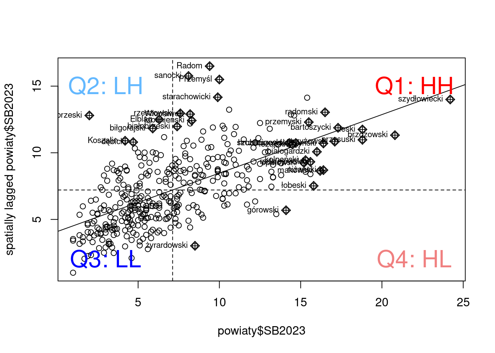

library(sf)
library(tmap)
library(spdep)
library(dplyr)9 Miary autokorelacji danych obszarowych
9.1 Autokorelacja przestrzenna danych obszarowych
Autokorelacja przestrzenna (spatial autocorrelation) określa pewną zależność, która może być obserowana jako zgrupowania (klastry) podobnych wartości lub systematyczny wzorzec przestrzenny (spatial pattern).
| Losowość przestrzenna :=================================================================================================: wartości obserwowane w danym obszarze nie zależą od wartości obserwowanych w sąsiednich obszarach | Dodatnia autokorelacja przestrzenna  | Ujemna autokorelacja przestrzenna :=================================================================================================================:+:===============================================================================:+ obserwuje się podobne wartości w sąsiadujących obszarach (wysokie wartości otoczone wysokimi, lub niskie niskimi) | wartości sąsiednie różnią się od siebie (np. niskie wartości otoczone wysokimi) | |
9.2 Miary autokorelacji przestrzennej
Celem analiz jest wyszukanie obszarów podobnych do siebie lub obszarów różniących się od sąsiednich. Losowość przestrzenna oznacza brak istnienia wzorca w przestrzeni. Przy testowaniu istnienia autokorelacji przestrzennej losowość przestrzenna jest przyjmowana jako hipoteza zerowa. W ramach analiz chcemy odrzucić hipotezę o występowaniu losowości przestrzennej (Odrzucenie hipotezy zerowej oznacza, że w danych istnieje jakiś wzorzec). Do testowania istnienia autokorelacji przestrzennej stosuje się różne miary autokorelacji przestrzennej.
9.2.1 Miary globalne
- jednoliczbowy wskaźnik autokorelacji przestrzennej lub ogólnego podobieństwa regionów
- informuje o tym, że wartości nie są w przestrzeni rozmieszczone losowo -> tj. istnieją przesłanki, że podobne wartości grupują się w przestrzeni
- miary globalne nie informują nas gdzie zlokalizowane są zgrupowania podobnych wartości
- statystyki globalne: I Morana, C Geary’ego, G Getisa & Orda
9.2.2 Miary lokalne
- obliczane dla każdego regionu;
- pozwalaja odpowiedzieć na pytanie: czy dany region jest otoczony regionami o wysokich lub niskich wartościach? czy dany region jest podobny/różny wzgledem regionow sąsiednich?
- statystyki lokalne: Lokalne I Morana, Lokalne C Geary’ego, Lokalne G Getisa & Orda
| Statystyka przestrzenna | Interpretacja | Komenda w R |
|---|---|---|
| MIARY GLOBALNE | ||
| Moran \(I\) | \(I > 0\) - dodatnia autokorelacja przestrzenna \(I < 0\) - ujemna autokorelacja przestrzenna \(I = 0\) - brak autokorelacji |
moran() moran.test() moran.mc() moran.plot() |
| Geary \(C\) | \(0-1\) - dodatnia autokorelacja przestrzenna \(1-2\) - ujemna autokorelacja przestrzenna \(1\) - brak autokorelacji |
geary() geary.test() geary.mc() |
| Getis & Ord \(G\) | testuje \(H_0\) o braku autokorelacji przestrzennej przeciwko \(H_A\) o dodatniej autokorelacji przestrzennej. Nie mierzy ujemnej autokorelacji przestrzennej. | globalG.test() |
| MIARY LOKALNE | ||
| Local Moran \(I_{i}\) | \(I_{i} > 0\) - grupowanie podobnych wartości (wyższych lub niższych od średniej) \(I_{i} < 0\) - połączenie różnych wartości (np. wysokie wartości otoczone niskimi wartościami lub niskie wartości otoczone wysokimi wartościami) |
local.moran() |
| Local Geary \(C_{i}\) | \(C_i < 0\) - niskie wartości wskazują na dodatnią autokorelację przestrzenną (podobieństwo regionu \(i\) z sąsiadami) \(C_i > 0\) - wysokie wartości wskazują na ujemną autokorelację przestrzenną, tj. region nie jest podobny do sąsiadów \(C_i = 0\) - brak autokorelacji przestrzennej |
localC(), localC_perm() |
| Local \(G_{i}\) | \(G_{i} > 0\) - zgrupowanie regionów o relatywnie wysokich wartościach, klaster wysokich wartości (hot-spots) \(G_{i} < 0\) - zgrupowanie regionów o relatywnie niskich wartościach, klaster niskich wartości (cold-spots) |
localG(), localG_perm() |
Źródło: Kopaczewska K. 2023. Przestrzenne metody ilościowe w R. (rozdział 4, str. 264-265), uzupełnione
9.3 Miary autokorelacji przestrzennej w R
Obliczenie miar autokorelacji przestrzennej w R wymaga wykonania dwóch kroków:
- Utworzenie macierzy wag przestrzennych na podstawie wybranego sąsiedztwa i standaryzacji.
- Obliczenie globalnych i lokalnych statystyk autokorelacji przestrzennych.
9.3.1 Pakiet spdep
Pakiet spdep dostarcza funkcji pozwalających na:
- tworzenie macierzy przestrzennych (
poly2nb,nb2listw) - obliczanie miar autokorelacji przestrzennych (patrz tabela powyżej)
9.4 Przykład: Stopa bezrobocia w Polsce w 2023 roku
9.4.1 Dane
W przykładzie zostaną wykorzystane dane dotyczące stopy bezrobocia w powiatach w Polsce w 2023 roku. Dane zostały pobrane z Banku Danych Lokalnych.
Plik
bezrobocie_pl.csvzawiera identyfikator powiatu, nazwę powiatu oraz dane dotyczące stopy bezrobocia dla lat 2004, 2010, 2021, 2023 (odpowiednio SB2004, SB2010, SB2021, SB2023).Plik
powiaty_pl.gpkgzawiera granice powiatów w Polsce.Plik
wojewodztwa.gpkgzawiera granice województw, jest używany wyłącznie przy wizualizacji wyników.
bezrobocie = read.csv("data/bezrobocie_pl.csv", sep = ";", dec = ".")
powiaty_granica = read_sf("data/powiaty_pl.gpkg")
woj_granica = read_sf("data/wojewodztwa.gpkg")Aby połączyć dane przestrzenne z informacją o stopie bezrobocia wykorzystane zostaną pola TERYT oraz Kod. Kolumna TERYT w pliku powiaty_pl.gpkg zawiera identyfikator powiatu w postaci 4 cyfr. Do pola TERYT trzeba dodać “000”, aby identyfikator powiatu w obu obiektach był taki sam. Do połączenia danych przestrzennych i nieprzestrzennych zostanie wykorzystana funkcja merge().
powiaty_granica$TERYT = as.integer(paste(powiaty_granica$TERYT, "000", sep=""))
powiaty = merge(powiaty_granica[, "TERYT"], bezrobocie, by.x = "TERYT", by.y = "Kod")Wizualizacja została wykonana z wykorzystaniem pakietu tmap.
tm_shape(powiaty) +
tm_polygons("SB2023", palette = "YlOrBr") +
tm_shape(woj_granica) +
tm_borders(col = "black", lwd = 3)9.4.2 Cel analizy
- analiza podobieństwa i różnic między obszarami/regionami
- wyszukanie obszarów podobnych do siebie
- znalezienie obszarów znacząco różnych od sąsiednich
9.4.3 Określanie sąsiedztwa danych poligonowych
Obliczenie miar autokorelacji przestrzennej wymaga określenia, które powiaty ze sobą sąsiadują oraz zapisania tej informacji w postaci macierzy wag przestrzennych.
9.4.3.1 Utworzenie macierzy wag przestrzennych
Macierz sąsiedztwa została utworzona z wykorzystaniem kryterium wspólnej granicy stosując regułę Queen.
Funkcja
poly2nb()z pakieruspdeptworzy listę sąsiadów na podstawie regionów mających wspólne granice. Funkcjapoly2nb()wymaga podania obiektu przestrzennego z granicami poligonów (w przykładzie obiekt powiaty) oraz określenia, czy stosowana będzie reguła queen (queen = TRUE), czy rook do określenia sąsiedztwa.Funkcja
nb2listw()z pakietuspdeptworzy macierz wag przestrzennych na podstawie macierzy sąsiedztwa. Funkcjanb2listw()wymaga podania obiektu zawierającego listę sąsiadów (obiekt będący wynikiem działania funkcjipoly2nb()oraz typu macierzy wag (w przykładzie style = “W” oznacza, że zostanie utworzona macierz standaryzowana wierszami).
#macierz sasiedztwa
nb_q = poly2nb(powiaty, queen = TRUE)
#macierz wag przestrzennych.
lw = nb2listw(nb_q, style = "W")
lwCharacteristics of weights list object:
Neighbour list object:
Number of regions: 380
Number of nonzero links: 2006
Percentage nonzero weights: 1.389197
Average number of links: 5.278947
Weights style: W
Weights constants summary:
n nn S0 S1 S2
W 380 144400 380 169.7589 1632.39Na czym polega reguła QUEEN stosowana do określenia sąsiadów?
9.4.4 Globalne miary autokorelacji przestrzennej
9.4.4.1 Globalny test I Morana
Statystyka globalna I Morana jest najstarszą miarą przestrzenną wprowadzoną przez Morana w 1950 roku. Wykorzystywana jest do testowania globalnej autokorelacji przestrzennej:
- \(H_0\) : brak autokorelacji przestrzennej
- \(H_1\) : autokorelacja przestrzenna
Statystyka I Morana przyjmuje wartości:
- \(I = 0\) - wartości obserwacji w odległości \(d\) są rozłożone losowo
- \(I > 0\) - autokorelacja dodatnia (pozytywna); sąsiadujące wartości są podobne; wartości podobne stykają się częściej niż losowo
- \(I < 0\) - autokorelacja ujemna (negatywna); sąsiadujące wartości są różne
Uwaga!: nawet wysokie wartości statystyki nie świadczą, że jest ona istotna statystycznie, dlatego poza policzeniem wartości statytyki należy wykonać test określający jej istotność statystyczną. Testowania istnienia autokorelacji przestrzennej może być wykonane wykorzystując dwa rodzaje testów:
- tradycyjne podejście (
moran.test()) - symulację z wykorzystaniem Monte Carlo (
moran.mc())
W tradycyjnym podejściu do testowania należy podać nazwę zmiennej (w przykładzie powiaty$SB2023) oraz macierz wag przestrzennych (argument listw). Do obliczenia statystyki I Morana zaleca się stosowanie macierzy wag przestrzennych standaryzowanej wierszami.
moran.test(powiaty$SB2023, listw = lw)
Moran I test under randomisation
data: powiaty$SB2023
weights: lw
Moran I statistic standard deviate = 12.997, p-value < 2.2e-16
alternative hypothesis: greater
sample estimates:
Moran I statistic Expectation Variance
0.439401477 -0.002638522 0.001156697 W wyniku otrzymamy wartość statystyki Morana (Moran I statistics) oraz istotność statystyczną wyniku (p-value).
Stosowanie tradycyjnego podeścia do testowania istotności autokorelacji wymaga spełnienia wielu założeń. Dlatego częściej stosuje się podejście oparte o symulacji. W każdej symulacji wartości danych przypisano losowo do poligonów, wyliczana jest wartość statystyki, a następnie sprawdza się, czy obliczona wartość statystyki Morana na podstawie danych jest wśród wartości, których spodziewalibysmy się z losowego rozkładu.
Do wykonania testu z wykorzystaniem symulacji stosuje się funkcję moran.mc() z pakietu spdep. Funkcja ta wymaga podania nazwy zmiennej (w przykładzie powiaty$SB2023), macierzy wag przestrzennych (argument listw) oraz liczby symulacji (argument nsim).
moran_test = moran.mc(powiaty$SB2023, listw = lw, nsim = 99)
moran_test
Monte-Carlo simulation of Moran I
data: powiaty$SB2023
weights: lw
number of simulations + 1: 100
statistic = 0.4394, observed rank = 100, p-value = 0.01
alternative hypothesis: greaterW wyniku otrzymamy wartość statystyki (statistic) oraz psedo p-value (p-value). Należy pamiętać, że w tym wypadku wartość pseudo p-value jest zależne od liczby symulacji. (gdybyśmy wykonali 999 symulacji, zamiast 99 pseudo p-value wyniesie 0.001). Niska wartość p-value nadal wskazuje na istotność statystyczną wyniku.
W przypadku stopy bezrobocia w powiatach wartość statystyki globalnej I Morana wyniosła 0,4394 co wskazuje na autokorelacja dodatnia (pozytywna), tj. istnieje przesłanka, że w danych istnieją zgrupowania powiatów o podobnych wartościach stopy bezrobocia.
9.4.4.2 Globalny test C Geary’ego
Miara C Geary’ego jest kolejną miarą globalną wykorzystywaną do testowania globalnej autokorelacji przestrzennej:
- \(H_0\) : brak autokorelacji przestrzennej
- \(H_1\) : autokorelacja przestrzenna
Statystyka C Geary’ego przyjmuje wartości w przedziale od 0 do 2.
- 0-1: autokorelacja dodatnia (pozytywna); sąsiadujące wartości są podobne
- 1: brak autokorelacji przestrzennej; sąsiadujące wartości są rozłożone losowo
- 1-2: autokorelacja ujemna (negatywna); sąsiadujące wartości nie są podobne
Tak jak w przypadku statystyki I Morana do testowania istotności można zastsować tradycyjne podejście (funkcja geary.test() z pakietu spdep) lub podejście oparte o symulacje (funkcja geary.mc() z pakietu spdep).
geary.test(powiaty$SB2023, listw = lw)
Geary C test under randomisation
data: powiaty$SB2023
weights: lw
Geary C statistic standard deviate = 11.024, p-value < 2.2e-16
alternative hypothesis: Expectation greater than statistic
sample estimates:
Geary C statistic Expectation Variance
0.541515148 1.000000000 0.001729799 geary.mc(powiaty$SB2023, listw = lw, nsim = 99)
Monte-Carlo simulation of Geary C
data: powiaty$SB2023
weights: lw
number of simulations + 1: 100
statistic = 0.54152, observed rank = 1, p-value = 0.01
alternative hypothesis: greaterWartość statystyki (0,54) wskazuje na istnienie autokorelacji dodatniej.
9.4.4.3 Globalny test G Getisa & Orda
Testuje hipotezę zerową o braku autokorelacji przestrzennej przeciwko hipotezie alternatywnej o dodatniej autokorelacji przestrzennej. Miara ta nie mierzy autokorelacji ujemnej.
- \(H_0\) : brak autokorelacji przestrzennej
- \(H_1\) : dodatnia autokorelacja przestrzenna
#obliczenie wag binarnych
lb = nb2listw(nb_q, style = "B")
#testowanie
globalG.test(powiaty$SB2023, listw = lb)
Getis-Ord global G statistic
data: powiaty$SB2023
weights: lb
standard deviate = 5.679, p-value = 6.774e-09
alternative hypothesis: greater
sample estimates:
Global G statistic Expectation Variance
1.582796e-02 1.392862e-02 1.118554e-07 Jak zinterpretujesz wynik?
9.4.5 Lokalne miary autokorelacji przestrzennej
9.4.5.1 Zależność między regionem a sąsiadami
| Wartości niskie w regionie \(i\) (L) | Wartości wysokie w regionie \(i\) (H) | |
|---|---|---|
| Wartości wysokie w regionach sąsiednich (H) | Kwadrat LH (Q2) Ujemna autokorelacja przestrzenna |
Kwadrat HH (Q1) Dodatnia autokorelacja przestrzenna |
| Wartości niskie w regionach sąsiednich (L) | Kwadrat LL (Q3) Dodatnia autokorelacja przestrzenna |
Kwadrat HL (Q4) Ujemna autokorelacja przetrzenna |
9.4.5.2 Wykres rozrzutu Morana
Wykres rozrzutu Morana pokazuje zależność między wartościami zmiennej (oś x) oraz wartościami zmiennej późnionej przestrzennie (oś y, spatial lag, tj. średnia wartość wyliczona na podstawie sąsiadów graniczących z regionem). Pionowa przerywana linia wyznacza wartość średnią dla analizowanej zmiennej, pozioma przerywana linia oznacza średnią wartość dla zmiennej opóźnionej przestrzennie. Linie te dzielą wykres na 4 części.
moran.plot(powiaty$SB2023, listw = lw, labels = powiaty$Nazwa)
text(3, 15, "Q2: LH", cex = 2, col = "steelblue1")
text(22, 15, "Q1: HH", cex = 2, col = "red")
text(22, 2, "Q4: HL", cex = 2, col = "lightcoral")
text(3, 2, "Q3: LL", cex = 2, col = "blue")
Kwarta 1 (Q1) wskazuje, że wartości relatywnie wysokie (wyższe od średniej) otoczone są przez relatywnie wysokie wartości sąsiadów, co wskazuje na istnienie autokorelacji dodatniej. Kwarta 3 (Q3) pokazuje, że wartości w regionie są niższe od średnich oraz są otoczone relatywnie niższymi wartościami sąsiadów (to też świadczy o autokorelacji dodatniej). Kwarta 2 (Q2) oraz kwarta 4 (Q4) przedstawiają ujemną autokorelacją przestrzenną. W przypadku kwarty 2 (Q2) relatywnie niskie wartości zmiennej (poniżej średniej) otoczone są przez relatywnie wysokie wartości dla sąsiadów. W kwarcie 4 relatywnie wysokie wartości w regionie (powyżej średniej) otoczone są przez relatywnie niskie wartości dla sąsiadów.
Wykres rozrzutu statystyki Morana można także wykonać dla wartości standaryzowanych. Wykres punktowy statystyki Morana wykonany w oparciu o standaryzowane wartości zmiennej oraz zmiennej opóźnionej przestrzennie (spatial lag) stanowi graficzną reprezentację globalnej Statystyki Morana. Nachylenie linii regresji jest tożsame z globalną statystyką Morana. Linie przerywane na wykresie wyznaczają średnią wartość obserwowanej zmiennej oraz średnią wartość zmiennej opóźnionej przestrzennie. Po standaryzacji średnie będą równe 0.
library(dplyr)
library(ggplot2)
#standaryzacja warości zmiennej
powiaty$SB_scaled = as.vector(scale(powiaty$SB2023))
#obliczenie wartości standaryzowanych dla zmiennej opóźnionej przestrzennie
powiaty$SB_scaled_lag = lag.listw(lw, powiaty$SB_scaled)
# typy zależnosci
powiaty = powiaty |>
mutate(mp_q = case_when(
powiaty$SB_scaled >= 0 & powiaty$SB_scaled_lag >= 0 ~ "Q1: HH",
powiaty$SB_scaled <= 0 & powiaty$SB_scaled_lag <= 0 ~ "Q3: LL",
powiaty$SB_scaled >= 0 & powiaty$SB_scaled_lag <= 0 ~ "Q4: HL",
powiaty$SB_scaled<= 0 & powiaty$SB_scaled_lag >= 0 ~ "Q2: LH"
)) # classify the cluster types
#wykres rozrzutu
ggplot(powiaty, aes(x=SB_scaled, y=SB_scaled_lag)) + geom_point(aes(col = mp_q), shape=20, show.legend = F, size = 3) +
scale_color_manual(values = c("Q1: HH"= "red", "Q2: LH" = "steelblue1", "Q3: LL" = "blue", "Q4: HL" = "lightcoral")) +
geom_hline(yintercept=mean(powiaty$SB_scaled_lag), lty=2) +
geom_vline(xintercept=mean(powiaty$SB_scaled), lty=2) + theme_minimal(base_size = 18) +
geom_smooth(formula=y ~ x, method="lm") +
annotate(geom="text", x=-1, y=-1.5, label="Q3: LL", color="blue", size = 7) +
annotate(geom="text", x=-1, y=2, label="Q2: LH", color="steelblue1", size = 7) +
annotate(geom="text", x=3, y=-1.5, label="Q4: HL", color="lightcoral", size = 7) +
annotate(geom="text", x=3, y=2, label="Q1: HH", color="red", size = 7)9.4.5.3 Lokalny test Morana \(I_{i}\)
Statytyka lokalna Morana \(I\) obliczana jest dla każdego regionu. Statystyka ta mierzy czy region jest otoczony przez regiony sąsiedzkie o podobnych czy różnych wartościach w stosusnku do losowego rozmieszczenia tych wartości w przestrzeni:
- \(I_{i} > 0\) - grupowanie podobnych wartości (wyższych lub niższych od średniej)
- \(I_{i} < 0\) - połączenie różnych wartości (np. wysokie wartości otoczone niskimi wartościami lub niskie wartości otoczone wysokimi wartościami)
Statytyka lokalna Morana \(I\)umożliwia wykrycie znaczących grup identycznych wartości wokół określonej lokalizacji (klastrów).
W R do obliczenia lokalnej statystyki Morana wykorzystuje się funkcję localmoran() z pakietu spdep. Funkcja ta wymaga zdefiniowania wartości zmiennej oraz macierzy wag przestrzennych (argument listw).
locm = localmoran(powiaty$SB2023, listw = lw)
head(locm) Ii E.Ii Var.Ii Z.Ii Pr(z != E(Ii))
1 -0.02618885 -3.278138e-03 0.174557285 -0.05483648 0.9562687
2 -0.14316746 -4.621114e-04 0.028866576 -0.83992908 0.4009482
3 0.01752931 -6.811164e-05 0.004256387 0.26972955 0.7873683
4 -0.66667478 -8.537739e-03 0.452226259 -0.97867488 0.3277406
5 0.19350355 -1.352469e-03 0.072156657 0.72539678 0.4682086
6 0.11137371 -3.325013e-04 0.024994379 0.70657154 0.4798328W wyniku otrzymamy wartość statystyki Morana dla każdego regionu (Ii) oraz wartość poziomu istotności statystyki wyliczonej dla każdego regionu (kolumna Pr(z != E(Ii))). Wartości poziomu istotności oraz statystyki możemy przypisać do obiektu powiaty co pozwoli nam na zwizualizowanie wyników.
powiaty$I = locm[, 1]
powiaty$I_pvalue = locm[, 5]Poniższa mapa przedstawia rozkład wartości statystyki lokalnej I Morana, bez uwzględniania informacji o istotności statystycznej wyniku. Kolorem niebieskim zaznaczono powiaty dla których odnotowano wartości wskazujące na autokorelację ujemną, a kolorem czerwonym na autokorelację dodatnią.
tm_shape(powiaty) +
tm_polygons(fill = "I", palette = "-RdBu", midpoint = 0) Na poniższej mapie kolorem zilustrowano wartości poziomu isotności wyliczonego dla każdego powiatu. Powiaty oznaczone kolorem szarym na mapie nie mają istotnych statystycznie wartości statystyki lokalnej I Morana.
tm_shape(powiaty) + tm_polygons(fill = "I_pvalue", breaks = c(0, 0.001, 0.01, 0.05, 1), palette = c("red", "orange", "yellow", "darkgrey"), colorNA = "white")Statystyka lokalna I Morana umożliwia identyfikację klastrów wysokich lub niskich wartości. Do identyfikacji klastrów wykorzystuje się wyłącznie istotne statystycznie wartości statystyki I Morana. Powiaty zostaną sklasyfikowane na 4 grupy: - wysokie wartości otoczone wysokimi wartościami - niskie wartości otoczone niskimi wartościami - wysokie wartości otoczone niskimi wartościami - niskie wartości otoczone wysokimi wartościami.
Do podziału na 4 grupy wykorzystuje się wykres rozrzutu Morana.
#standaryzacja wartości zmiennej SB2023
powiaty$SB_scaled = as.vector(scale(powiaty$SB2023))
#obliczenie wartości standaryzowanych dla zmiennej opóźnionej przestrzennie
powiaty$SB_scaled_lag = lag.listw(lw, powiaty$SB_scaled)
#klasyfikacja na 4 grupy biorąc pod uwagę kwartę wykresu rozrzutu oraz informację czy statystyka jest istotna statystycznie
powiaty = powiaty |>
mutate(mcluster_type = case_when(
powiaty$SB_scaled >= 0 & powiaty$SB_scaled_lag >= 0 & locm[, 5] <= 0.05 ~ "High-High",
powiaty$SB_scaled <= 0 & powiaty$SB_scaled_lag <= 0 & locm[, 5] <= 0.05 ~ "Low-Low",
powiaty$SB_scaled >= 0 & powiaty$SB_scaled_lag <= 0 & locm[, 5] <= 0.05 ~ "High-Low",
powiaty$SB_scaled<= 0 & powiaty$SB_scaled_lag >= 0 & locm[, 5] <= 0.05 ~ "Low-High",
locm[, 5] > 0.05 ~ "Not Significant"
)) # classify the cluster types
cluster_colors <- c("High-High"= "red", "High-Low" = "lightcoral", "Low-High" = "steelblue1", "Low-Low" = "blue", "Not Significant" = "lightgrey" )
MyPalette = cluster_colors[names(cluster_colors) %in% unique(powiaty$mcluster_type)]
tm_shape(powiaty) +
tm_polygons("mcluster_type", palette = MyPalette, colorNA = "white") +
tm_shape(woj_granica) +
tm_borders(col = "black", lwd = 3)Powyższą klasyfikację można także uzyskać stosując funkcję hotspot() z pakietu spdep.
localmoran(powiaty$SB2023, listw = lw) |> hotspot(Prname="Pr(z != E(Ii))", cutoff=0.05, p.adjust="none") -> powiaty$localItable(powiaty$localI)
Low-Low High-Low Low-High High-High
33 1 6 43 cluster_colors <- c("High-High"= "red", "High-Low" = "lightcoral", "Low-High" = "steelblue1", "Low-Low" = "blue")
MyPalette = cluster_colors[names(cluster_colors) %in% unique(powiaty$localI)]
tm_shape(powiaty) +
tm_polygons("localI", palette = MyPalette, colorNA = "white") +
tm_shape(woj_granica) +
tm_borders(col = "black", lwd = 3)9.4.5.4 Lokalna statystyka C Geary’ego
Lokalna statystyka C Geary’ego pokazuje średnie różnice między obiektem a sąsiadami co pomaga znależć wartośc odstające. Niskie wartości lokalnego Geary’ego wskazują na dodatnią autokorelację przestrzenną, a duże na ujemną autokorelację przestrzenną.
- 0: brak autokorelacji
- \(C_{i} < 0\) - niskie wartości wskazują na dodatnią autokorelację przestrzenną, tj. podobieństwo regionu \(i\) z sąsiednimi
- \(C_{i} > 0\) - wysokie wartości wskazują na ujemną autokorelację przestrzenną, tj. region nie ma podobnych wartości do sąsiadów
W R lokalną statystykę C Geary’ego oblicza się używając funkcji localC_perm() z pakietu spdep, który wymaga zdefiniowania zmiennej uwzględnianej w analizie oraz macierzy wag przestrzennych (argument listw). Funkcja hotspot() z pakietu spdep zwraca wektor z przypisanymi kategoriami klastrów dla określonego poziomu isotności. Kategorie te można przypisac do obiektu przestrzennego powiaty oraz zwizualizować.
localC_perm(powiaty$SB2023, listw = lw, nsim = 99) |> hotspot(Prname="Pr(z != E(Ci)) Sim", cutoff=0.05, p.adjust="none") -> powiaty$localCtable(powiaty$localC)
High-High Low-Low Negative
28 49 1 cluster_colors <- c("High-High"= "red", "Low-Low" = "blue", "Other Positive" = "lightcoral", "Negative" = "steelblue1", "Insignificant" = "lightgrey" )
MyPalette = cluster_colors[names(cluster_colors) %in% unique(powiaty$localC)]
tm_shape(powiaty) +
tm_polygons("localC", palette = MyPalette, colorNA = "white") +
tm_shape(woj_granica) +
tm_borders(col = "black", lwd = 3)9.4.5.5 Lokalna statystyka G Getisa & Orda
Wskaźnik do identyfikacji lokalnych zależności przestrzennych (koncentracji przestrzennych), które nie pojawiają się w analizie globalnej:
- \(G_i > 0\) - zgrupowanie regionów o wysokich wartościach (region \(i\) oraz regiony sąsiednie mają wysokie wartości) - tzw. klastr wysokich wartości (hot-spots)
- \(G_i < 0\) - zgrupowanie regionow o niskich wartościach (region \(i\) jest otoczony przez podobne mu regiony o niskich wartościach) - tzw. cold-spots
Jako wysokie wartości uznaje się wartości wyższe od średniej, a jako niskie wartości uznaje się wartości niższe od średniej.
Lokalna statystyka G Getisa & Orda nie mierzy autokorelacji ujemnej.
W R lokalną statystykę G Getisa & Orda oblicza się używając funkcji localG_perm() z pakietu spdep, który wymaga zdefiniowania zmiennej uwzględnianej w analizie oraz macierzy wag przestrzennych (argument listw). Funkcja hotspot() z pakietu spdep zwraca wektor z przypisanymi kategoriami klastrów dla określonego poziomu isotności. Kategorie te można przypisac do obiektu przestrzennego powiaty oraz zwizualizować.
localG = localG_perm(powiaty$SB2023, listw = lw, nsim = 99)
localG |> hotspot(Prname="Pr(z != E(Gi)) Sim", cutoff=0.05, p.adjust="none") -> powiaty$localGtable(powiaty$localG)
Low High
41 31 cluster_colors <- c("Low" = "blue", "High"= "red")
MyPalette = cluster_colors[names(cluster_colors) %in% unique(powiaty$localG)]
tm_shape(powiaty) +
tm_polygons("localG", palette = MyPalette, colorNA = "white") +
tm_shape(woj_granica) +
tm_borders(col = "black", lwd = 3)9.5 Przykład 2: Stopa bezrobocia w Polsce w 2004 roku
9.5.1 Dane
library(sf)
bezrobocie = read.csv("data/bezrobocie_pl.csv", sep = ";", dec = ".")
powiaty_granica = read_sf("data/powiaty_pl.gpkg")
woj_granica = read_sf("data/wojewodztwa.gpkg")
powiaty_granica$TERYT = as.integer(paste(powiaty_granica$TERYT, "000", sep=""))
powiaty = merge(powiaty_granica[, "TERYT"], bezrobocie, by.x = "TERYT", by.y = "Kod")
powiaty$SB2004[is.na(powiaty$SB2004)]<-0tm_shape(powiaty) +
tm_polygons("SB2004", palette = "YlOrBr") +
tm_shape(woj_granica) +
tm_borders(col = "black", lwd = 3)
9.5.2 Miary autokorelacji przestrzennej
library(spdep)
#macierz sasiedztwa
nb_q = poly2nb(powiaty, queen = TRUE)
#macierz wag przestrzennych.
lw = nb2listw(nb_q, style = "W")
#globalna statystyka Morana
moran_test = moran.mc(powiaty$SB2004, listw = lw, nsim = 99)
# globalna statystyka C Geary'ego
geary_test = geary.mc(powiaty$SB2004, listw = lw, nsim = 99)
#globalna statystyka Getisa i Orda
g_test = globalG.test(powiaty$SB2004, listw = lw)
#lokalna statystyka Morana - klastry wartości
localmoran(powiaty$SB2004, listw = lw) |> hotspot(Prname="Pr(z != E(Ii))", cutoff=0.05, p.adjust="none") -> powiaty$localI
# lokalna statystyka Geary'ego
localC_perm(powiaty$SB2004, listw = lw, nsim = 99) |> hotspot(Prname="Pr(z != E(Ci)) Sim", cutoff=0.05, p.adjust="none") -> powiaty$localC
# lokalna statstyka Getisa i Orda
localG_perm(powiaty$SB2004, listw = lw, nsim = 99)|> hotspot(Prname="Pr(z != E(Gi)) Sim", cutoff=0.05, p.adjust="none") -> powiaty$localG9.5.3 Wizualizacja wyników
library(tmap)
#wizualizacja wyników
#local I
cluster_colors <- c("High-High"= "red", "High-Low" = "lightcoral", "Low-High" = "steelblue1", "Low-Low" = "blue")
MyPalette = cluster_colors[names(cluster_colors) %in% unique(powiaty$localI)]
tm_i = tm_shape(powiaty) +
tm_polygons("localI", palette = MyPalette, colorNA = "white") +
tm_shape(woj_granica) +
tm_borders(col = "black", lwd = 3)
#local C
cluster_colors <- c("High-High"= "red", "Low-Low" = "blue", "Other Positive" = "lightcoral", "Negative" = "steelblue1")
MyPalette = cluster_colors[names(cluster_colors) %in% unique(powiaty$localC)]
tm_c = tm_shape(powiaty) +
tm_polygons("localC", palette = MyPalette, colorNA = "white") +
tm_shape(woj_granica) +
tm_borders(col = "black", lwd = 3)
#local G
cluster_colors <- c("Low" = "blue", "High"= "red")
MyPalette = cluster_colors[names(cluster_colors) %in% unique(powiaty$localG)]
tm_g = tm_shape(powiaty) +
tm_polygons("localG", palette = MyPalette, colorNA = "white") +
tm_shape(woj_granica) +
tm_borders(col = "black", lwd = 3)
tmap_arrange(tm_i, tm_c, tm_g)